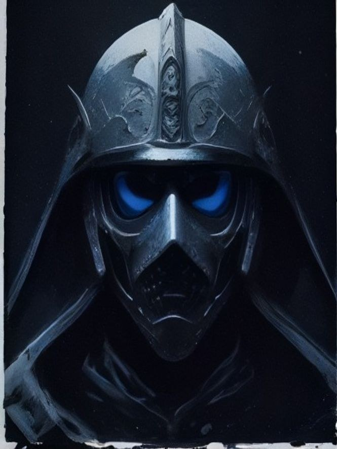
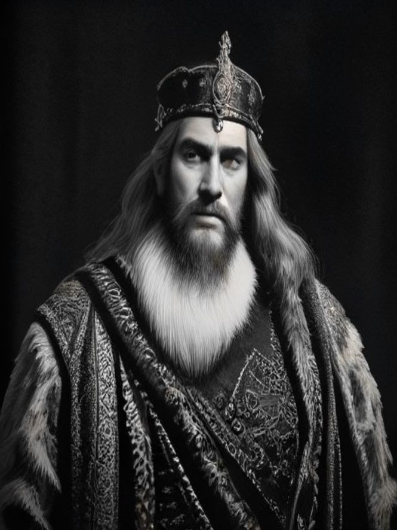
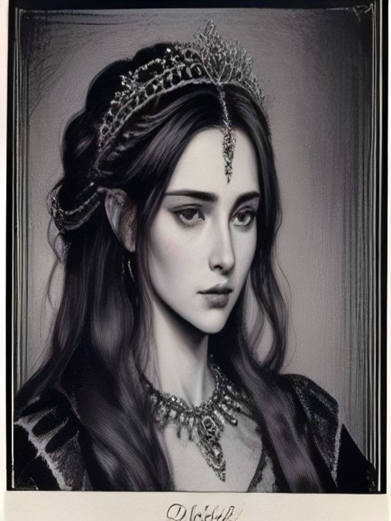
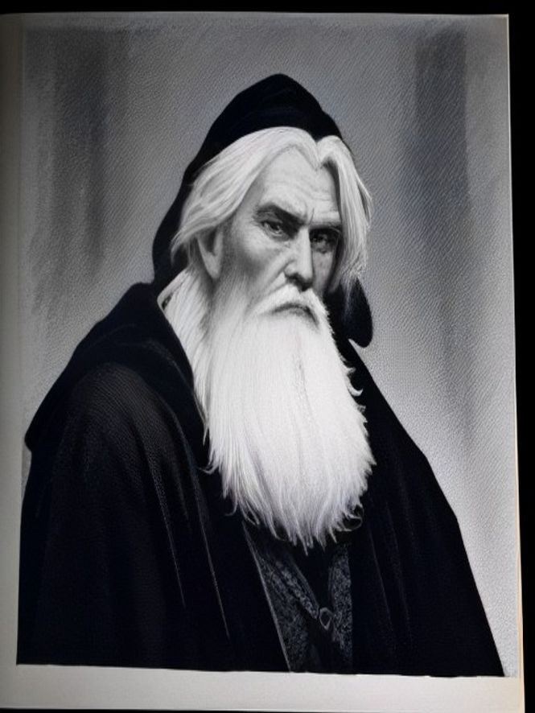
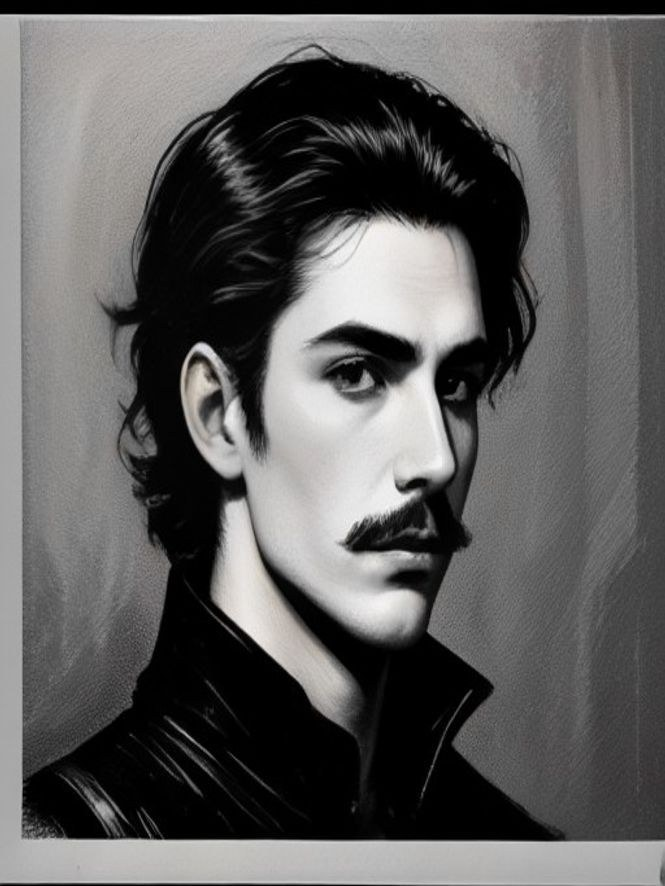
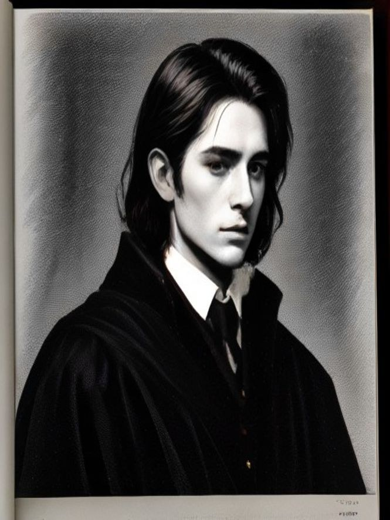
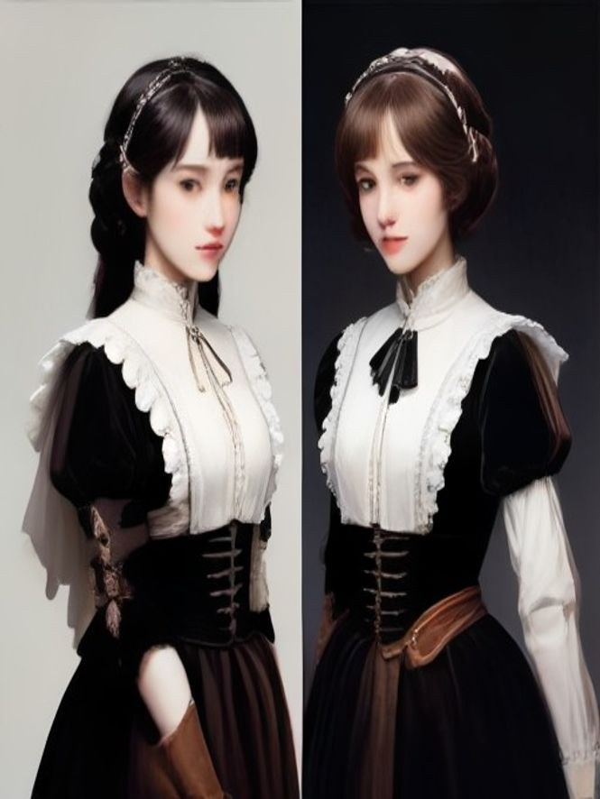

Tonight's Programme
哈姆雷特The Tragedy of Hamlet, Prince of Denmark
❦
復仇、遲疑與亡魂——每場做成 4-8 頁短漫。
登場人物Dramatis Personae
-
哈姆雷特Hamlet 丹麥王子，滿朝喜氣裡唯一的黑。全身黑衣・失眠的黑眼圈 -
奧菲莉亞Ophelia 波隆尼之女，哈姆雷特的戀人。及腰散髮・淡色長裙 -

老王鬼魂The Ghost 先王的亡魂——面甲之內，只有黑暗與兩點幽藍。全劇不露臉 -

克勞地Claudius 新王——弒兄、篡位、娶嫂。尖鬚金冠・不離手的酒杯 -

葛簇特Gertrude 王后，喪期未滿改嫁小叔。赭紅盤辮 -

波隆尼Polonius 御前大臣，愛訓話的老臣。分叉白鬚・官鏈 -

雷歐提斯Laertes 奧菲莉亞之兄，赴法留學。短捲髮・腰間細劍 -

霍拉旭Horatio 摯友與同窗，全劇最清醒的人。高領學袍・腰間小書 -

羅森克蘭茲＆吉爾登斯坦Rosencrantz & Guildenstern 被國王收買的同學二人組。金髮碗蓋頭・油瘦垂髮
肖像在這裡看個夠——正篇裡，臉是主角的特權：鏡頭多半交給場景、動作與剪影。本劇特許色是幽藍：只留給鬼魂與毒藥。
第一幕Act I
-
First Draft・首輪草稿刊出
第一場 城牆亡魂Act I, Scene I
深夜的艾辛諾爾城牆，先王的亡魂全身甲冑現形。首輪草稿 6 頁已刊出。
-
First Draft・首輪草稿刊出
第二場 黑衣王子Act I, Scene II
「脆弱啊，你的名字就是女人！」滿朝喜氣，一身黑衣。首輪草稿 7 頁已刊出。
-
First Draft・首輪草稿刊出
第三場 臨別家訓Act I, Scene III
「尤其要緊的——你必須對自己忠實。」碼頭道別與父親的禁令。首輪草稿 4 頁已刊出。
-
First Draft・首輪草稿刊出
亡魂吐真Act I, Scenes IV–V
「那毒害你父親的蛇，頭上正戴著王冠呢。」真相與復仇之誓。首輪草稿 8 頁已刊出。
第二幕Act II
第三幕Act III
-
First Draft・首輪草稿刊出
生存還是毀滅Act III, Scene I
史上最著名的獨白，與最殘忍的分手——「到修道院去吧。」首輪草稿 5 頁已刊出。
-
First Draft・首輪草稿刊出
戲中戲Act III, Scene II
「捕鼠機」開演，毒殺場面重現，國王臉色大變離席。首輪草稿 7 頁已刊出。
-
First Draft・首輪草稿刊出
祈禱中的國王Act III, Scene III
跪著的兇手、舉起又放下的劍——錯失的復仇時機。首輪草稿 4 頁已刊出。
-
First Draft・首輪草稿刊出
寢宮驚變Act III, Scene IV
帷幕後的一劍，錯殺的老臣，再現的亡魂。首輪草稿 7 頁已刊出。